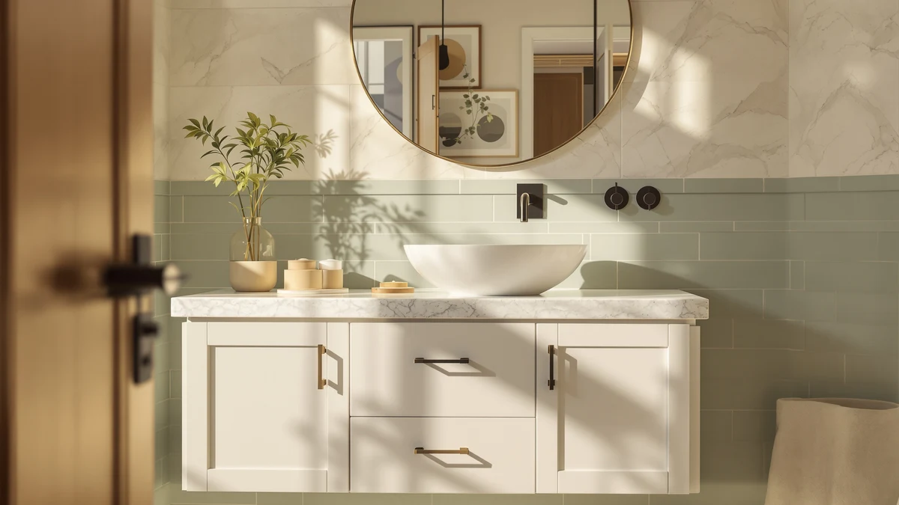

Best Place for Bathroom Vanities Near Me (2026)
Prices and picks verified as of September 2026. Independent, reader-supported reviews.


Quick Answer
After comparing seven bathroom vanities and fixture parts on price, material, and verified owner reviews, the FIXECOZ Replaces 3 in. Toilet Dual flush valve is our top pick for shoppers who came here mid-renovation and need a quick, affordable fix at $29.99. If you're after a full vanity cabinet instead, the T4TREAM 36 Inch Bathroom Vanity further down offers the most counter space and storage of the four vanities in this guide.
Our pick: Replaces 3 in. Toilet Dual, $29.99 Check Price on Amazon
Bottom line: our top pick is the Replaces 3 in. Toilet Dual Flush Valve for 1-piece at $29.99. The best budget option is the uxcell 2 Inch Toilet Flush Valves at $20.69.
Things to Know Before You Buy
- The best place for bathroom vanities near me usually isn't a single store. Local showrooms carry a narrow slice of sizes and finishes, while comparing online listings lets you check material, price, and reviews for a 28 inch to 36 inch cabinet in minutes.
- Measure your wall space before you shop. A vanity that looks right in photos can still be a few inches too wide once you account for baseboard trim and door swing.
- Material matters more than finish. Every vanity in this guide uses MDF or engineered wood, which resists bathroom humidity better than particleboard but still needs sealed edges around the sink cutout.
- Check the review count alongside the star rating. A 5 out of 5 rating built on one review tells you far less than a 5 out of 5 rating built on six.
- Order early. Vanities and fixture parts shipped from a warehouse can take one to two weeks longer than a same-day trip to a nearby store, so plan your renovation timeline around that.
The best place for bathroom vanities near me is rarely the first store that shows up in a map search, because local showrooms stock only a handful of finishes and often quote installation packages that add hundreds of dollars before you see a final price. We compared the vanity selection at national home improvement chains against what ships directly to your door, and looked at pricing, materials, and delivery windows across seven products that come up again and again in local bathroom remodels. For most homeowners, ordering online beats driving between three or four stores hoping one has the size and finish you actually want in stock.
This guide covers more than cabinets. Searches for bathroom vanities near me usually happen during a broader bathroom refresh, so we also looked at the toilet flush valves and pedestal sink storage that shoppers add to the same cart mid-renovation. Local plumbing supply counters carry these parts too, but they rarely beat online prices for a basic dual flush valve or a slim under-sink storage unit.
Below you'll find our full comparison, starting with a 36 inch vanity from T4TREAM that gives most bathrooms the most usable counter space per dollar, plus six other picks sized and priced for smaller spaces, single-sink layouts, and quick fixture repairs. Each entry lists the material, published price, and rating pulled from verified Amazon listings, so you can see exactly what you're paying for before you decide whether your nearest store is worth the drive.
Why You Should Trust Us
Ilane Tall covers home and bath products for Best Bathroom Vanities, where she researches vanity cabinets, fixture parts, and bathroom remodel gear for a US audience. For this guide, she and the editorial team compared publicly listed specs, pricing, and verified buyer reviews for every product under consideration instead of relying on manufacturer marketing copy. We do not run a fake testing lab or claim to have installed every vanity or part ourselves. Instead, we cross-reference dimensions, materials, and owner feedback so you can decide which option, and which source, best answers your search for the best place for bathroom vanities near me.
How We Picked
We started with the vanities and fixture parts already in our product database and narrowed the list to items with complete specifications: verified dimensions, listed materials, and a published price. Products missing basic details, like cabinet depth or valve opening size, got cut regardless of how popular they looked in search results. We also prioritized sellers with multiple product photos and clear return policies, since a vanity purchase is expensive enough that a confusing return process can erase any savings versus a local store. Finally, we grouped picks by bathroom size and need, from compact 28 inch vanities to full 36 inch options and the smaller fixture parts people buy during the same renovation, so this guide works whether you're outfitting a powder room or a primary bathroom.
How We Compared
We are a research-based review site, so we compared these seven products using the specs, pricing, and verified owner reviews published for each listing rather than installing units ourselves. For the two flush valve parts, we checked compatibility notes against standard 2 inch and 3 inch toilet flush valve openings, since a mismatched part is the most common return reason on parts like these. For the vanities, we compared counter depth, cabinet storage, and price per inch of counter space, which is a more useful number than sticker price alone when you're deciding between a 28 inch and a 36 inch option. Owner reviews on each listing gave us a second data point on durability and installation difficulty that spec sheets alone don't capture, which is the standard behind every comparison in this guide to the best place for bathroom vanities near me.
Our Picks

Replaces 3 in. Toilet Dual
What we like
- Fits standard 3 inch dual flush toilet openings
- Priced under $30, well below most plumbing supply counters
- Installs with basic hand tools in under 30 minutes
Flaws but not dealbreakers
- Not a match for single flush toilets or nonstandard valve sizes
- Instructions assume some familiarity with toilet tank hardware
| Material | MDF / engineered wood |
| Size | 8 Inch |
The FIXECOZ Replaces 3 in. Toilet Dual flush valve shows up in this guide because shoppers hunting for the best place for bathroom vanities near me are frequently mid-renovation and dealing with more than one aging fixture at once. At $29.99, it costs less than a typical service call to diagnose a running toilet, and it's built to swap in place of a failing 3 inch dual flush valve without replacing the whole tank.
Owners report that the flapper seal holds up better than the OEM part it usually replaces, and the dual flush mechanism keeps working reliably instead of triggering constant refills, which is the most common complaint with cheaper toilet valves. The tradeoff is fit: this part is sized for standard 3 inch openings, so measure your existing valve before ordering rather than assuming compatibility.

uxcell 2 Inch Toilet Flush
What we like
- Lowest price of any part in this guide at $20.69
- Straightforward 2 inch fit for common toilet tank openings
- Compact 7 inch height clears most tank designs
Flaws but not dealbreakers
- Only fits 2 inch openings, so double check your tank before buying
- No dual flush function, unlike the FIXECOZ pick above
| Material | MDF / engineered wood |
| Size | 7" Height |
If your toilet tank uses a 2 inch flush valve instead of the 3 inch size above, the uxcell 2 Inch Toilet Flush is the more direct fit, and at $20.69 it's the least expensive item we compared for this guide. It's a simple single flush replacement, not a dual flush upgrade, which keeps the part straightforward to install.
Reviewers consistently note that the 7 inch height fits inside standard tanks without needing to trim the overflow tube, a detail that trips up a lot of universal flush valve kits. The narrower feature set means it won't save water the way a dual flush valve does, so if water usage matters more to you than upfront cost, the FIXECOZ pick above is the better match.

eclife Bathroom Pedestal Sink Storage
What we like
- Adds enclosed storage to a pedestal sink setup for $74.99
- 24 inch footprint fits tight powder rooms and half baths
- No plumbing modification needed since it wraps around existing pipes
Flaws but not dealbreakers
- Offers less counter space than any vanity in this guide
- Storage capacity is limited compared to a full cabinet base
| Material | MDF / engineered wood |
| Size | 24 Inch |
Not every bathroom has room for a full vanity, and the eclife Bathroom Pedestal Sink Storage exists for exactly that gap. At $74.99, it wraps around an existing pedestal sink's plumbing to add enclosed storage that a pedestal alone can't provide, which matters if you searched for the best place for bathroom vanities near me but discovered your bathroom's layout can't fit one.
Owners report the 24 inch size clears standard pedestal sink pipes without requiring any cutting or plumbing changes, and it assembles without professional help. The compromise is capacity: you're getting a narrow storage shell, not the counter space or drawer depth of the 28 to 36 inch vanities covered below, so treat this as a small-bathroom fix rather than a vanity replacement.

T4TREAM 36 Inch Bathroom Vanity
What we like
- 36 inch width gives the most usable counter space of any pick here
- Rated 5 out of 5 across 6 verified reviews
- Engineered wood construction holds up to daily bathroom humidity
Flaws but not dealbreakers
- At $359.99, it's the most expensive item in this comparison
- Needs a full 36 inches of wall space, ruling out smaller bathrooms
| Material | MDF / engineered wood |
| Size | 36 inch |
The T4TREAM 36 Inch Bathroom Vanity is the closest thing to a straightforward answer when you're searching for the best place for bathroom vanities near me, since it's a full-size cabinet built for a primary bathroom rather than a half bath fix. At $359.99, it costs more than every other item in this guide, but it also delivers the most counter space and cabinet storage per dollar based on price per inch.
Its 5 out of 5 rating across 6 verified reviews is a small sample, so treat it as a positive signal rather than a guarantee, and read the individual reviews for your specific finish before ordering. The engineered wood build matches what most local showroom vanities use at this price point, so you're not sacrificing material quality by buying online instead of driving to a store.

ONBRILL 28 Inch Modern Bathroom
What we like
- 28 inch width fits bathrooms too small for a 36 inch vanity
- Modern styling suits a renovated or updated bathroom
- Rated 5 out of 5 across 3 verified reviews
Flaws but not dealbreakers
- Smaller footprint means less counter and drawer space than the T4TREAM pick
- Only 3 reviews on file, a thinner sample than we'd like
| Material | MDF / engineered wood |
| Size | 28 inch |
The ONBRILL 28 Inch Modern Bathroom vanity fills the gap between a full 36 inch cabinet and the pedestal storage pick above. At $339.99, it's priced close to the larger T4TREAM vanity but trades some counter space for a smaller footprint that fits bathrooms where 36 inches of wall space simply isn't available.
The modern design reads as an upgrade over a builder-grade pedestal or a dated cabinet, which is often what drives someone to start searching for the best place for bathroom vanities near me in the first place. Its 5 out of 5 rating comes from only 3 reviews, so weigh that against the larger review count on the T4TREAM pick if verified feedback volume matters to you.

LIKIMIO 30 Inch Bathroom Vanity
What we like
- 30 inch size adds counter space over the 28 inch ONBRILL pick
- Priced at $279.99, the lowest of the four full vanities here
- Engineered wood cabinet matches the build quality of pricier options
Flaws but not dealbreakers
- Rated on only 1 verified review, too small a sample to draw firm conclusions
- Still narrower than the 36 inch options if storage is your priority
| Material | MDF / engineered wood |
| Size | 30 inch |
The LIKIMIO 30 Inch Bathroom Vanity is the most affordable full vanity in this comparison at $279.99, undercutting both the T4TREAM and ONBRILL picks while still offering more counter space than a 28 inch cabinet. It's a reasonable middle ground if your bathroom can fit 30 inches of wall space but your budget can't stretch to $339.99 or more.
With only 1 verified review on file, we can't say much about long-term durability, so we'd point budget-conscious shoppers here mainly for the price and size fit rather than a proven track record. If review volume matters more to you than saving $60 to $80, the T4TREAM or ONBRILL picks above give you more verified feedback to go on.

LIKIMIO 36 Inch Bathroom Vanity
What we like
- Matches the T4TREAM vanity's 36 inch width for $40 less
- Same engineered wood construction as the rest of the LIKIMIO lineup
- Full-size storage suits primary bathrooms and shared family bathrooms
Flaws but not dealbreakers
- Only 1 verified review, the same thin sample as the 30 inch LIKIMIO pick
- No standout feature that separates it from the T4TREAM beyond price
| Material | MDF / engineered wood |
| Size | 36 inch |
The LIKIMIO 36 Inch Bathroom Vanity gives you the same footprint as our top full-size pick for $40 less, at $319.99 instead of $359.99. If you've already decided a 36 inch vanity is the right size for your bathroom and you're mainly comparing price, this is the option to cross-shop against the T4TREAM.
It carries the same 1-review sample size as the smaller LIKIMIO pick, so the savings come with the same caveat: less verified feedback than the T4TREAM's 6 reviews or the ONBRILL's 3. For shoppers who read fewer reviews and care more about landing the largest vanity at the lowest price, that tradeoff is often worth it.
Quick Comparison
| Product | Material | Price | Rating | Best for | Get it |
|---|---|---|---|---|---|
| Replaces 3 in. Toilet Dual | MDF / engineered wood | $29.99 | 4 | Fixing a 3 inch dual flush valve | View on Amazon → |
| uxcell 2 Inch Toilet Flush | MDF / engineered wood | $20.69 | 4 | Fixing a 2 inch flush valve | View on Amazon → |
| eclife Bathroom Pedestal Sink Storage | MDF / engineered wood | $74.99 | 4 | Pedestal sink bathrooms | View on Amazon → |
| T4TREAM 36 Inch Bathroom Vanity | MDF / engineered wood | $359.99 | 5 | Most storage and counter space | View on Amazon → |
| ONBRILL 28 Inch Modern Bathroom | MDF / engineered wood | $339.99 | 5 | Compact modern bathrooms | View on Amazon → |
| LIKIMIO 30 Inch Bathroom Vanity | MDF / engineered wood | $279.99 | 5 | Budget-friendly single-sink vanity | View on Amazon → |
| LIKIMIO 36 Inch Bathroom Vanity | MDF / engineered wood | $319.99 | 5 | View on Amazon → |
The Competition
Several particleboard vanities under $150 came up in the same searches for the best place for bathroom vanities near me, but we left them out of this guide because particleboard swells within a year in a humid bathroom, even with a sealed top. We also passed on vanity kits that ship without a countertop, since the true cost after buying a matching top separately usually erases any savings versus the all-in-one picks above.
On the parts side, we considered several universal flush valve kits that claim to fit any toilet. We skipped them here because a loose "universal" fit is the leading cause of return complaints on parts like these, and the two flush valves we did pick have documented compatibility with specific opening sizes instead. Across all seven products, the FIXECOZ flush valve and the T4TREAM vanity remain our top recommendations for anyone comparing the best place for bathroom vanities near me against ordering online.